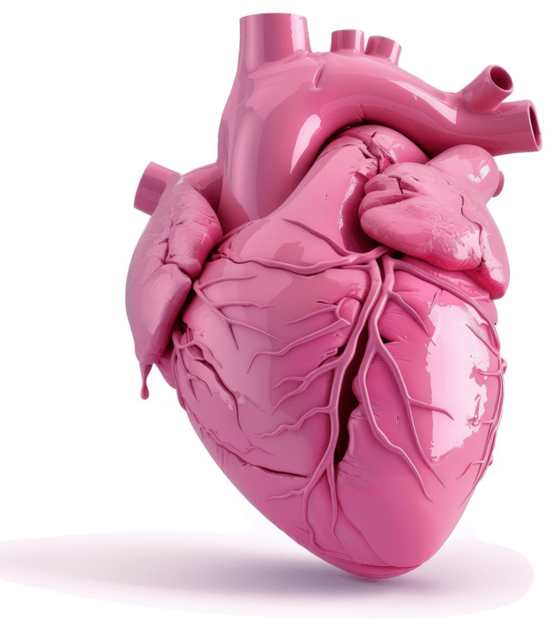

ADVANCING RADIOLOGY. ADVANCING YOU.
ADVANCING RADIOLOGY. ADVANCING YOU.
ESR MEMBERS
The European Society of Radiology (ESR) is an apolitical, non-profit organisation dedicated to strengthening and unifying European radiology to improve the diagnosis, treatment and prevention of diseases while offering their members opportunities to learn, connect and thrive.
01
Who we are
The ESR is a professional organisation that represents the field of radiology in Europe serving as a platform for radiologists, medical professionals, researchers, and other stakeholders to collaborate, share knowledge, and advance the practice of radiology. Through its numerous services, events and initiatives, the ESR strives to expand and evolve the way radiology is applied, taking action to improve patient care across the world.
More about us →
02
What do we do.
The ESR carries out ground-breaking work in education, science, research, publications and collaboration with international organisations and societies. It is also internationally renowned for the European Congress of Radiology (ECR), an annual meeting that offers visitors a glimpse into the future of medical imaging and serves not only as a connection hub for medical professionals but also for the companies that evolve radiology with their game-changing innovations.
More about ECR →
03
How you can benifit
The ESR connects you with the world of medical imaging, keeps you up to date on scientific developments, opens the door to educational programmes and helps you to stay ahead in your profession. And the best thing about it: A full membership is less than 1 Euro/month!
Become a member →
News
about the ESR and the world
of medical imaging.
Find older articles
in our archive Here
MUST READ
ESR
EUROPIAN SOCIETY OF RADIOLOGY
EUROPIAN ASSOCIATING NUCLEAR MEDICINE
IN SUPPORT OF THE EU SAFE HEARTS PLAN.
IMAGING SAVES LIVES
THE ROLE OF IMAGING IN IMPROVING CARDIOVASCULAR HEALTH.

July 2026
Imaging Saves Lives: Report from the European Parliament event on the role of imaging in improving cardiovascular health
Read More →
Radiologists at the heart of delivering Europe’s Safe Hearts Plan
Brussels/BE, July 3 – Leading radiologists, nuclear medicine physicians, policymakers and patient representatives gathered yesterday at the European Parliament for Imaging ...
EC reopened call for European Network of AI-Powered Advanced Screening Centres (until September 10)
The European Commission is looking to engage advanced healthcare organisations that are deploying, ...
Surging Impact Factors mark winning year for ESR Journals
The European Society of Radiology (ESR) is excited to announce the 2025 Impact Factor (IF) for European Radiology, Insights into Imaging, and European Radiology Experimental.
Join the ESR/IAEA Modern Radiology eBook Webinar on Breast Imaging
The European Society of Radiology and the IAEA invite you to a free live webinar on Breast Imaging, taking place online on June 3 from 10:00 to 11:00 CEST.
Copyright © 2026 European Society of Radiology